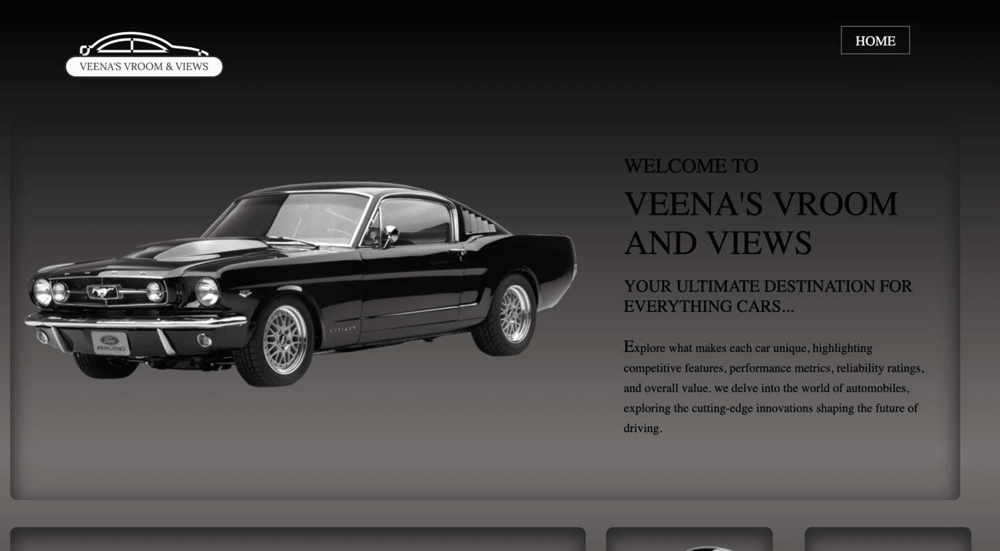

Review 1
Krishna Patel

Veena's Vroom & Views
- Submission leads right to the page to be reviewed
- There are no spaces or upper-cases in the file/folder names, including scripts, images, etc...
- Design
- There are no contrast errors and the font sizing is good
- The page is linked to a .css file for stlying
- CRAP
- Contrast: The contrast is good, with there being a well implemented monochromatic color scheme
- Repetition: All elements are stylistically consistent throughout the page
- Alignment: The text has good alignment, with each section being inside of their own seperate boxes
- Proximity: Everything is evenly spaced with nothing feeling cramped together
- The page includes all necessary elements
- Header has the page name as an image, not an h1
- Main does not include page name at all
- There is a slogan that is on theme with the site
- The page does have a footer element, but it has no content
- The site is foundationally complete, but lacking content